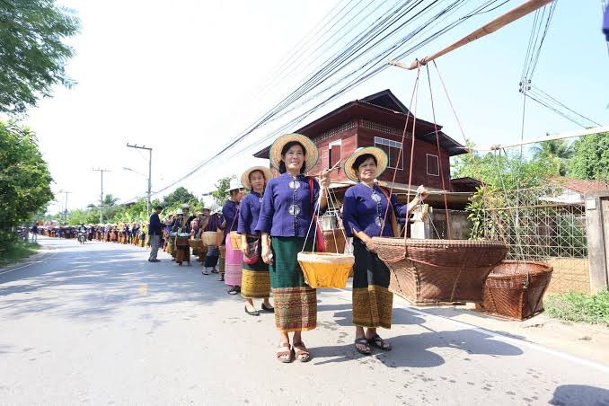

ประเพณีแห่น้ำขึ้นโฮง
ประเพณีแห่น้ำขึ้นโฮง (โฮง หรือ โรง) ซึ่งจัดขึ้นในช่วงวันขึ้น 13 ค่ำ เดือน 6 ของทุกปี โดยเป็นการรวมกลุ่มของชาวบ้านในตำบลฝายหลวงและชุมชนใกล้เคียงในอำเภอลับแล จังหวัดอุตรดิตถ์ เพื่อทำพิธีสรงน้ำ เจ้าฟ้าฮ่ามกุมาร ซึ่งเป็นวีรบุรุษทางวัฒนธรรมของชาวลับแลในอดีต